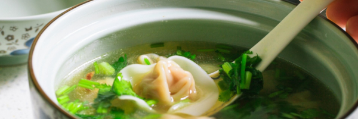

Ingredients
- 2 tbsp olive oil
- 1 medium onion, chopped
- 2 cloves garlic, minced
- 800 g canned whole tomatoes
- 500 ml vegetable broth
- 200 ml heavy cream
- 1 tsp sugar
- 1 tsp salt
- Freshly ground black pepper, to taste
- 1 handful fresh basil leaves
Instructions
- Heat olive oil in a large pot over medium heat. Add onion and garlic, sauté until softened.
- Add canned tomatoes (with their juice) and vegetable broth. Stir well and bring to a simmer.
- Season with sugar, salt, and pepper. Let simmer for 15–20 minutes to allow flavors to meld.
- Use an immersion blender to puree the soup until smooth. Alternatively, transfer to a blender in batches.
- Stir in the heavy cream and fresh basil leaves. Simmer for another 5 minutes.
- Taste and adjust seasoning if needed.
- Serve hot with crusty bread or a sprinkle of Parmesan cheese.